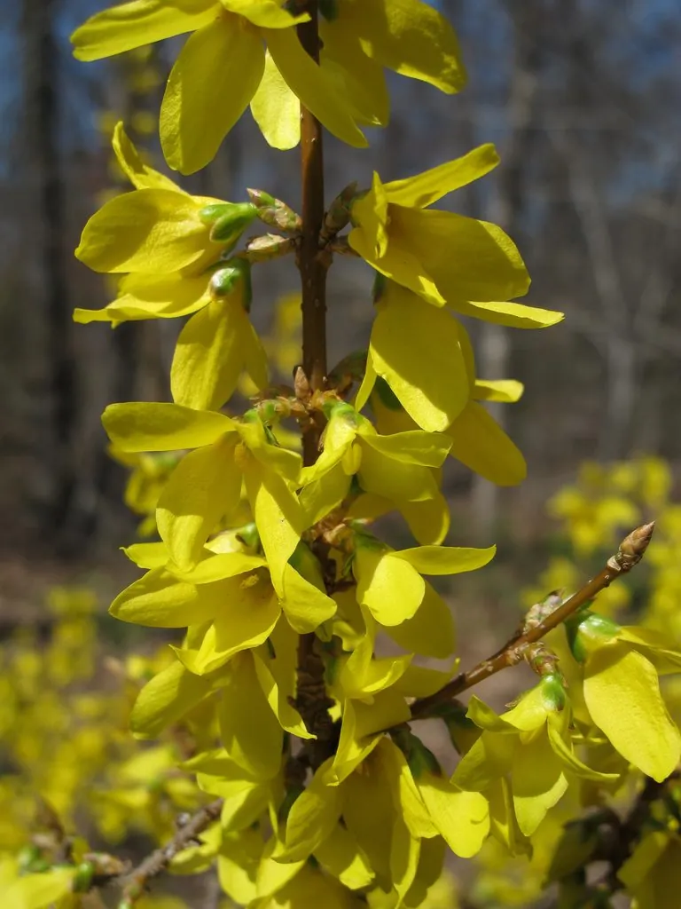

灌木与花木 · 植物界
金钟花 Forsythia viridissima

木犀科落叶灌木，枝条绿色，早春先花后叶，满枝金黄花朵形似金钟，是北方春季最早开放的花木之一。
- 分类
- 门被子植物门纲木兰纲目唇形目科木犀科属连翘属
- 栖息环境
- 海拔 1000 米以下的山坡林缘、溪边与庭院，喜光也耐半阴
- 地理分布
- 中国江苏、浙江、安徽、湖北、江西、河南等地；南北各地栽培
- 保护级别
- 暂无评估；中国未列入国家重点保护野生植物名录
物种志
金钟花为木犀科连翘属落叶灌木，高 1–3 米，枝条直立或拱形下垂，绿色，髓部片状。叶片对生，长椭圆形至披针形，边缘具锯齿。花金黄色，1–3 朵腋生，花冠钟状，4 裂，花期 3–4 月，先花后叶；果实为蒴果，卵形，果期 6–7 月。
金钟花原产中国江苏、浙江、安徽、湖北、江西等地，生于山坡林缘与溪边，中国南北各地广泛栽培。它喜光，也耐半阴，耐寒、耐旱，对土壤要求不严。早春时节，金黄色花朵先于叶片开放，满枝金黄，是北方城市春季最早的花木之一，常植于庭院、公园与水边。茎皮与根可入药，有清热解毒之效；枝条可编筐。它与连翘外形相似，但金钟花枝条绿色、髓部片状，可据此区分。
形态与习性
- 株高1–3 m，枝条绿色、髓部片状
- 花期3–4 月，先花后叶
- 果期6–7 月，蒴果卵形
- 光照喜光，也耐半阴
- 水分耐旱，忌积水
- 土壤适应性强，以疏松壤土为好
- 主要用途早春观花，茎皮与根入药，枝条编筐
趣味知识
- 金钟花与连翘外形相似，但金钟花枝条绿色、髓部呈片状。
- 它先花后叶，早春满枝金黄，是北方最早开放的花木之一。
- 金钟花的花冠呈钟状，4 裂，因此得名“金钟”。
- 茎皮与根可入药，民间用于清热解毒。